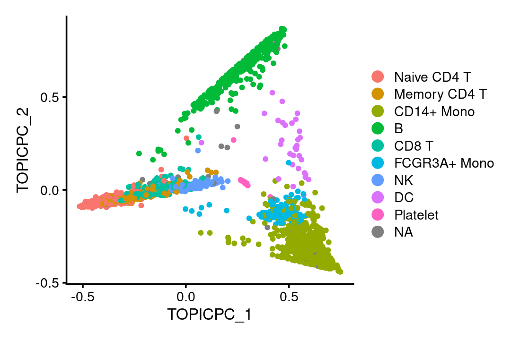

<– Run this to generate the HTML and Markdown outputs: library(rmarkdown) render(“fasttopics.Rmd”) render(“fasttopics.Rmd”,output_format = md_document()) –>
This vignette illustrates the use of the fastTopics Seurat wrapper to analyze a Seurat data set. This vignette is intended only to introduce the basic fastTopics interface for Seurat objects. For more detailed guidance on analyzing single-cell RNA-seq data using a topic model, please see the fastTopics vignettes.
If you find the fastTopics package useful for your work, please cite:
Visualizing the structure of RNA-seq expression data using grade of membership models.
K. K. Dey, C. J. Hsiao and M. Stephens.
PLoS Genetics, 2017.
and
Non-negative matrix factorization algorithms greatly improve topic model fits.
P. Carbonetto, A. Sarkar, Z. Wang and M. Stephens.
arXiv, 2021
If you use the de_analysis function in fastTopics, please cite:
Interpreting structure in sequence count data with differential expression analysis allowing for grades of membership.
P. Carbonetto, K. Luo, A. Sarkar, A. Hung, K. Tayeb, S. Pott and M. Stephens
bioRxiv, 2023.
To begin, load the packages we will need to perform the analysis.
library(Seurat)
library(SeuratData)
library(SeuratWrappers)
library(fastTopics)
library(cowplot)Set the seed so that the results can be reproduced.
set.seed(1)Load (and install if necessary) the PBMC 3k data set containing transcription profiles for 2,700 cells.
InstallData("pbmc3k")
data(pbmc3k)
dim(GetAssayData(pbmc3k))
# [1] 13714 2700Fit the multinomial topic model to the raw UMI counts. No data preprocessing or gene filtering is needed. It may take several minutes to fit the model.
pbmc3k <- FitTopicModel(pbmc3k, k = 6)To fit a topic model, we had to choose \(K\), the number of topics. Here, we chose \(K = 6\) topics. In most settings, a good choice of \(K\) will not be known in advance, so you will likely want to explore the different settings of \(K\).
This first plot shows the cells projected onto the top two PCs of the topic proportions.
Idents(pbmc3k) <- pbmc3k$seurat_annotations
DimPlot(pbmc3k, reduction = "pca_topics", pt.size = 1) + theme_cowplot(font_size = 10)
Compare this with the top two PCs of the normalized and scaled counts:
pbmc3k <- FindVariableFeatures(pbmc3k)
pbmc3k <- NormalizeData(pbmc3k)
pbmc3k <- ScaleData(pbmc3k)
pbmc3k <- RunPCA(pbmc3k)
DimPlot(pbmc3k, reduction = "pca", pt.size = 1) + theme_cowplot(font_size = 10)The fitted topic model—a “multinom_topic_model” object—is stored in the “misc” slot:
fit <- Misc(Reductions(pbmc3k, "multinom_topic_model"))$fitOnce the topic model has been extracted from the Seurat object, many fastTopics functions can be used for downstream analysis and visualization. For example, we can create a “Structure plot” to visualize all \(K\) dimensions of the topic model simultaneously:
structure_plot(fit, grouping = Idents(pbmc3k), gap = 25)In the Structure plot, each position along the x-axis is a cell, and the bar heights at each positioin correspond to topic proportions for that cell.
From this plot, we observe that topic 3 (green) closely corresponds to B cells. Topics 1 (red) and 4 (purple) also correspond fairly well to the two types of monocytes, but there is also some overlap in the topics; in particular, the purple topic is shared by both types of monocytes. This suggests that expression in these two types of cells is less distinguishable than B cells vs. other cell types.
Topic 5 (orange) corresponds closely to natural killer (NK) cells. Topic 2 (blue) appears to capture biological processes common to T cells. Interestingly, CD8+ T cells have characteristics of both NK cells and T cells—these are T cells that sometimes become ``NK-like’’—and this is reflected in the topic model by assigning membership to both topics 2 and 5 (blue and orange).
The other cell types (platelets, dendritic cells), perhaps because they are less abundant and/or difficult to distinguish from the other cell types, are represented as combinations of the topics for the other cell types.
Topic 6 is present in almost all cells to varying degrees, and therefore its biological interpretation is not at all clear from the cell labeling.
TO DO: Illustrate the use of the de_analysis.
This is the version of R and the packages that were used to generate these results:
sessionInfo()
# R version 4.2.0 (2022-04-22)
# Platform: x86_64-pc-linux-gnu (64-bit)
# Running under: Red Hat Enterprise Linux 8.4 (Ootpa)
#
# Matrix products: default
# BLAS/LAPACK: /software/openblas-0.3.13-el8-x86_64/lib/libopenblas_skylakexp-r0.3.13.so
#
# locale:
# [1] LC_CTYPE=en_US.UTF-8 LC_NUMERIC=C
# [3] LC_TIME=en_US.UTF-8 LC_COLLATE=en_US.UTF-8
# [5] LC_MONETARY=en_US.UTF-8 LC_MESSAGES=en_US.UTF-8
# [7] LC_PAPER=en_US.UTF-8 LC_NAME=C
# [9] LC_ADDRESS=C LC_TELEPHONE=C
# [11] LC_MEASUREMENT=en_US.UTF-8 LC_IDENTIFICATION=C
#
# attached base packages:
# [1] stats graphics grDevices utils datasets methods base
#
# other attached packages:
# [1] cowplot_1.1.1 fastTopics_0.6-150 SeuratWrappers_0.3.1
# [4] pbmc3k.SeuratData_3.1.4 SeuratData_0.2.2 SeuratObject_4.1.3
# [7] Seurat_4.3.0 rmarkdown_2.14
#
# loaded via a namespace (and not attached):
# [1] plyr_1.8.7 igraph_1.3.1 lazyeval_0.2.2
# [4] sp_1.6-0 splines_4.2.0 listenv_0.8.0
# [7] scattermore_0.8 ggplot2_3.3.6 digest_0.6.29
# [10] invgamma_1.1 htmltools_0.5.2 SQUAREM_2021.1
# [13] fansi_1.0.3 magrittr_2.0.3 tensor_1.5
# [16] cluster_2.1.3 ROCR_1.0-11 remotes_2.4.2
# [19] globals_0.14.0 RcppParallel_5.1.5 matrixStats_0.62.0
# [22] R.utils_2.11.0 MCMCpack_1.6-3 spatstat.sparse_3.0-0
# [25] prettyunits_1.1.1 colorspace_2.0-3 rappdirs_0.3.3
# [28] ggrepel_0.9.1 xfun_0.30 dplyr_1.0.9
# [31] crayon_1.5.1 jsonlite_1.8.0 progressr_0.10.0
# [34] spatstat.data_3.0-0 survival_3.3-1 zoo_1.8-10
# [37] glue_1.6.2 polyclip_1.10-0 gtable_0.3.0
# [40] MatrixModels_0.5-0 leiden_0.3.10 future.apply_1.9.0
# [43] abind_1.4-5 SparseM_1.81 scales_1.2.0
# [46] DBI_1.1.2 spatstat.random_3.1-3 miniUI_0.1.1.1
# [49] Rcpp_1.0.9 progress_1.2.2 viridisLite_0.4.0
# [52] xtable_1.8-4 reticulate_1.24 rsvd_1.0.5
# [55] truncnorm_1.0-8 htmlwidgets_1.5.4 httr_1.4.2
# [58] RColorBrewer_1.1-3 ellipsis_0.3.2 ica_1.0-2
# [61] farver_2.1.0 pkgconfig_2.0.3 R.methodsS3_1.8.1
# [64] sass_0.4.1 uwot_0.1.14 deldir_1.0-6
# [67] utf8_1.2.2 labeling_0.4.2 tidyselect_1.1.2
# [70] rlang_1.1.0 reshape2_1.4.4 later_1.3.0
# [73] munsell_0.5.0 tools_4.2.0 cli_3.3.0
# [76] generics_0.1.2 ggridges_0.5.3 evaluate_0.15
# [79] stringr_1.4.0 fastmap_1.1.0 yaml_2.3.5
# [82] goftest_1.2-3 mcmc_0.9-7 knitr_1.39
# [85] fitdistrplus_1.1-8 purrr_0.3.4 RANN_2.6.1
# [88] pbapply_1.5-0 future_1.25.0 nlme_3.1-157
# [91] mime_0.12 quantreg_5.93 formatR_1.12
# [94] R.oo_1.24.0 compiler_4.2.0 plotly_4.10.0
# [97] png_0.1-7 spatstat.utils_3.0-1 tibble_3.1.7
# [100] bslib_0.3.1 stringi_1.7.6 highr_0.9
# [103] lattice_0.20-45 Matrix_1.5-3 vctrs_0.4.1
# [106] pillar_1.7.0 lifecycle_1.0.1 BiocManager_1.30.20
# [109] spatstat.geom_3.0-6 lmtest_0.9-40 jquerylib_0.1.4
# [112] RcppAnnoy_0.0.19 data.table_1.14.4 irlba_2.3.5
# [115] httpuv_1.6.5 patchwork_1.1.1 R6_2.5.1
# [118] promises_1.2.0.1 KernSmooth_2.23-20 gridExtra_2.3
# [121] parallelly_1.31.1 codetools_0.2-18 MASS_7.3-56
# [124] assertthat_0.2.1 sctransform_0.3.5 hms_1.1.1
# [127] parallel_4.2.0 quadprog_1.5-8 grid_4.2.0
# [130] tidyr_1.2.0 coda_0.19-4 ashr_2.2-54
# [133] Rtsne_0.16 mixsqp_0.3-48 spatstat.explore_3.0-6
# [136] shiny_1.7.1